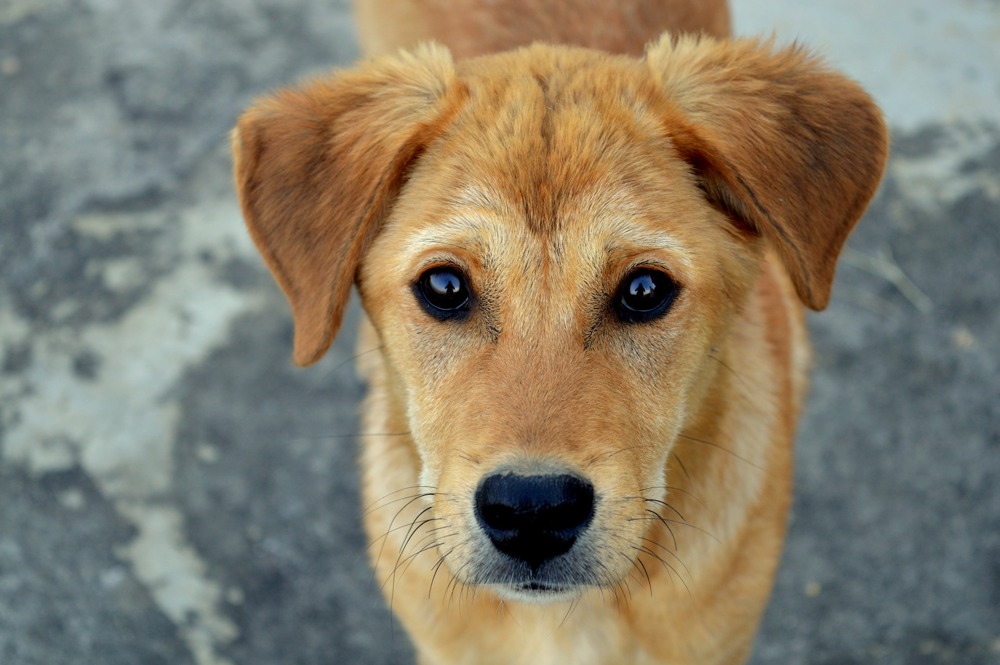
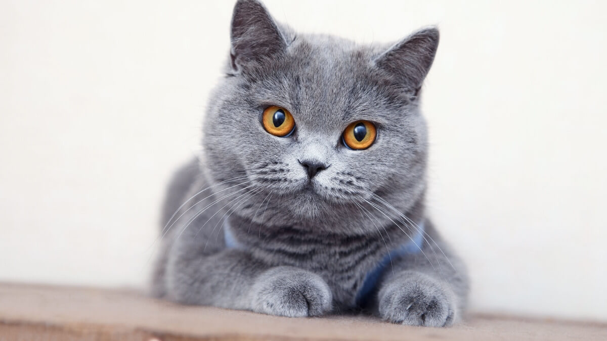

Galeria de Adoção

Pingo
Espécie: Cachorro
Raça: Vira-lata
Idade: 4 anos
Personalidade: Brincalhão, leal e sociável.

Chico
Espécie: Gato
Raça: Siamês
Idade: 5 anos
Personalidade: Reservado, fiel e carinhoso.
Vanessa
Espécie: Gata
Raça: Randoll
Idade: 3 anos
Personalidade: Dócil, brincalhona e sociável.
Thor
Espécie: Cachorro
Raça: Pastor Alemão
Idade: 6 anos
Personalidade: Protetor, inteligente e carinhoso.

Flor
Espécie: Gata
Raça: British
Idade: 2 anos
Personalidade: Amigável, brincalhão e leal.

Scooby
Espécie: Cachorro
Raça: Salsicha
Idade: 4 anos
Personalidade: Fofo, leal e dócil.